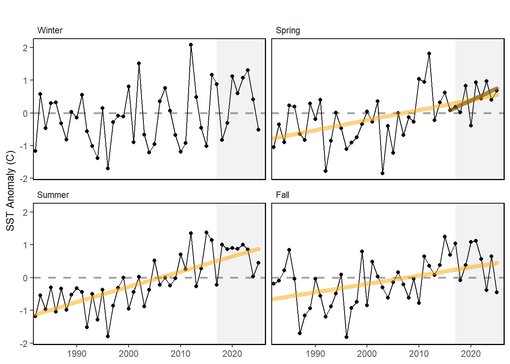
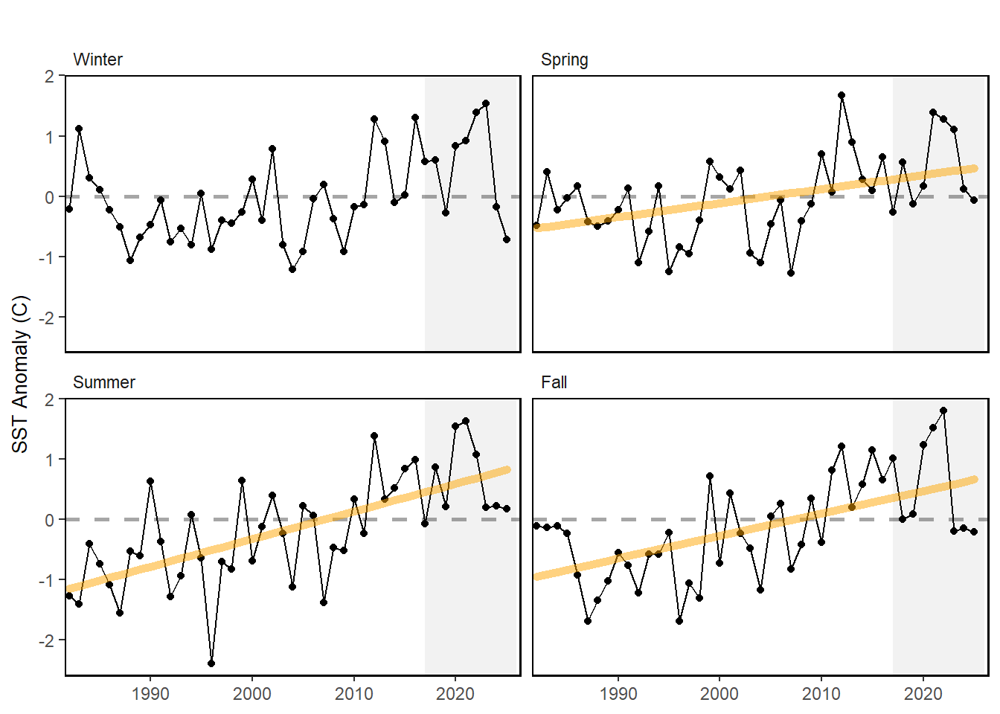
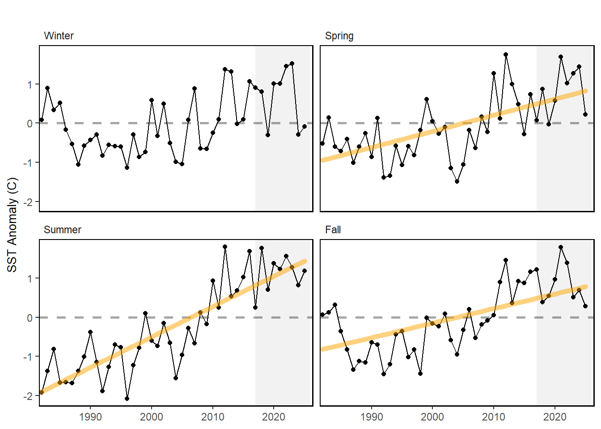

46 Sea-surface temperature anomaly
Last updated July 23, 2026
Description: Seasonal sea surface temperature anomaly
Contributor(s): Brandon Beltz, Abigail Tyrell
Affiliations: NEFSC
Indicator Family:
Indicator Category:
Synthesis Theme:
46.1 Introduction to Indicator
Sea surface temperature can be used as a proxy for overall thermal conditions in the system. Data for sea surface anomalies were derived from the National Oceanographic and Atmospheric Administration optimum interpolation sea surface temperature high resolution data set (NOAA OISST V2). Mean seasonal-annual SST was calculated for each EPU. These data extend from 1981 to present. Anomalies are calculated by subtracting the long-term mean temperature from 1990-2010 for each season, from the seasonal-annual mean SST.
46.2 Key Results and Visualizations
Since 1982, SST has been increasing in all seasons in all three EPUs. 2023 was the warmest winter SST in the GOM and GB on record. All record warmest seasonal SST years have occurred on or after 2012. 2023 also saw relatively cooler summer temperatures in GB and the GOM and fall temperatures in all regions.
Mid-Atlantic Bight

Georges Bank

Gulf of Maine

46.3 Implications
Sea surface temperature is an indicator of thermal habitat for pelagic species. Long-term warming trends suggest wide-spread environmental change in the system. Warming trends can have potential impacts on species spatial distributions, the seasonal timing of species life history events, and the overall productivity of the system.
46.4 Indicator statistics
Spatial scale: EPU
Temporal scale: Seasonal: Winter (January - March), Spring (April - June), Summer (July - September), Fall (October - December)
Variable definitions
46.5 Get the data
Point of contact: brandon.beltz@noaa.gov
ecodata dataset: ecodata::seasonal_oisst_anom
Tech Doc link: https://noaa-edab.github.io/tech-doc/seasonal_oisst_anom.html